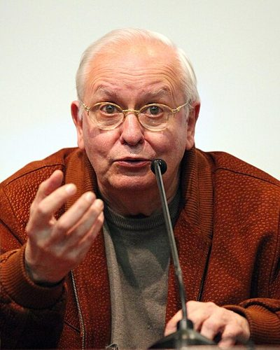

Ideologies / Left
What is Radical Democracy?
Radical Democracy is a political ideology in the Left family. A post Marxist argument that the working class has no built in role as the agent of history. Feminist, anti racist, ecological, peace and labour movements are each struggles in their own right, and none is merely an effect of the economy. The task of the left is to link them into a common front without dissolving their differences. The aim is not to overthrow liberal democracy but to extend its principles of liberty and equality into more areas of social life. Conflict is treated as a permanent feature of politics.
Deepen liberal democracy by linking many struggles for equality.
Defined from: Ernesto Laclau and Chantal Mouffe, Hegemony and Socialist Strategy (1985)
See how close you are to Radical Democracy Dare a friend to answer as one

_(cropped).jpg){kind=link}
Where Radical Democracy stands on 13 axes
Each axis runs from 0 to 100. A score of 50 is the middle. On a classic compass it sits in the Libertarian Left quadrant.
| Axis | Position | Score | In words |
|---|---|---|---|
| EconomyMarket to Planned | 55 | Balanced | |
| OwnershipPrivate to Collective | 55 | Balanced | |
| RightsLiberty to Security | 10 | Very strongly Liberty | |
| GovernmentDemocracy to Autocracy | 0 | Very strongly Democracy | |
| StructureDecentralised to Centralised | 35 | Leans Decentralised | |
| NationInternationalist to Nationalist | 15 | Very strongly Internationalist | |
| ImmigrationMulticulturalist to Assimilationist | 5 | Very strongly Multiculturalist | |
| ValuesProgressive to Traditional | 5 | Very strongly Progressive | |
| TechnologyAccelerationist to Precautionary | 40 | Leans Accelerationist | |
| EnvironmentIndustrialist to Environmentalist | 50 | Balanced | |
| ReligionSecular to Religious | 5 | Very strongly Secular | |
| MilitaryPacifist to Militarist | 25 | Strongly Pacifist | |
| TradeFree Trade to Protectionist | 40 | Leans Free Trade |
Ideologies closest to Radical Democracy
- Liberal Socialism88% alike
- Black Feminism87% alike
- Capabilities Approach87% alike
- New Left87% alike
- Social Liberalism86% alike
Its opposite on this map is Kokutai Thought, at 18%.
Parties near Radical Democracy
- Students for a Democratic SocietyUnited States. The Port Huron Statement (1962)88% alike
- Broad FrontUruguay. Bases Programáticas 2025 to 2030 (2023)85% alike
- SumarSpain. Un programa para ti (2023)83% alike
- Working Families PartyUnited States. The People's Charter (2020)83% alike
Common questions
What is Radical Democracy?
Radical Democracy is a political ideology in the Left family. A post Marxist argument that the working class has no built in role as the agent of history. Feminist, anti racist, ecological, peace and labour movements are each struggles in their own right, and none is merely an effect of the economy. The task of the left is to link them into a common front without dissolving their differences. The aim is not to overthrow liberal democracy but to extend its principles of liberty and equality into more areas of social life. Conflict is treated as a permanent feature of politics.
What does Radical Democracy believe?
In one line: Deepen liberal democracy by linking many struggles for equality. Its strongest positions are Democracy, Multiculturalist, Progressive. A post Marxist argument that the working class has no built in role as the agent of history. Feminist, anti racist, ecological, peace and labour movements are each struggles in their own right, and none is merely an effect of the economy. The task of the left is to link them into a common front without dissolving their differences. The aim is not to overthrow liberal democracy but to extend its principles of liberty and equality into more areas of social life. Conflict is treated as a permanent feature of politics.
Who founded Radical Democracy?
Radical Democracy is defined here from Hegemony and Socialist Strategy (1985) by Ernesto Laclau and Chantal Mouffe. The thinker most tied to it is Ernesto Laclau (1935 to 2014).
Is Radical Democracy left wing or right wing?
On a classic two axis compass Radical Democracy falls in the Libertarian Left quadrant, which means the economic centre and the libertarian side. Left and right hide a lot, though, which is why EthosScales scores it on thirteen separate axes.
How is Radical Democracy different from Liberal Socialism?
They are close: 88% alike. The biggest gaps are on Immigration, where Radical Democracy scores 5 and Liberal Socialism scores 25, and Values, where Radical Democracy scores 5 and Liberal Socialism scores 20. On each axis, 0 is one end and 100 is the other.
Think this is wrong? Suggest a correction. The scores are editorial estimates.